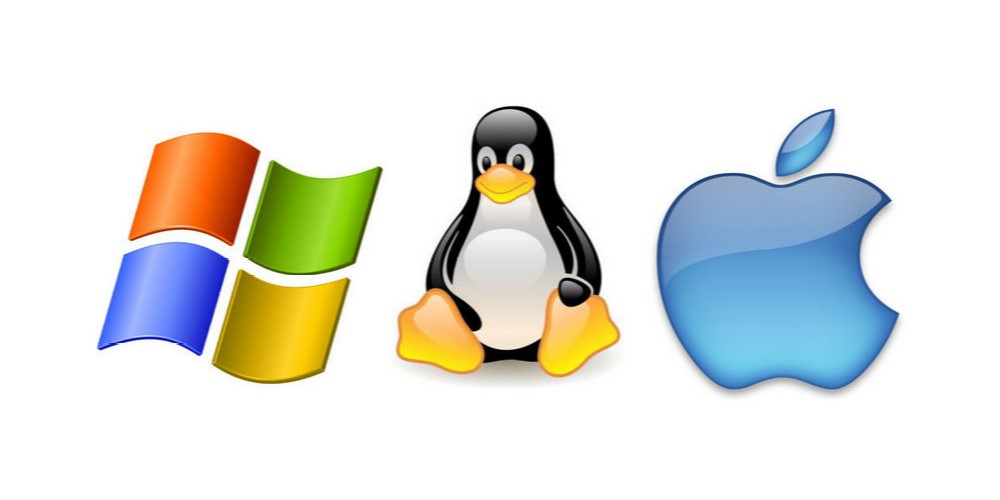

Введение
Операционная система (ОС) - это программное обеспечение, которое управляет ресурсами компьютера (процессором, памятью, устройствами ввода-вывода) и обеспечивает выполнение задач пользовательских программ. ОС обеспечивает пользовательский интерфейс для взаимодействия с компьютером и управляет ресурсами таким образом, чтобы приложения могли работать эффективно и без конфликтов.
Существует три популярных операционных системы для персональных компьютеров - Windows, MacOs и Дистрибутивы Linux. В этой главе мы рассмотрим их особенности и различия.
